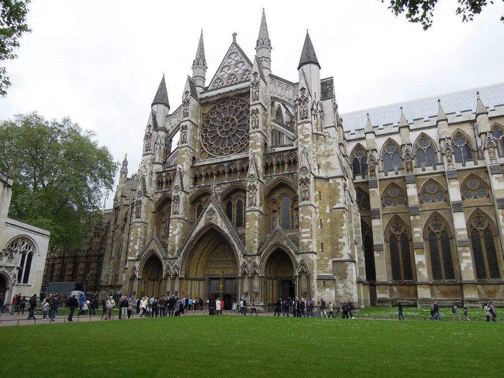
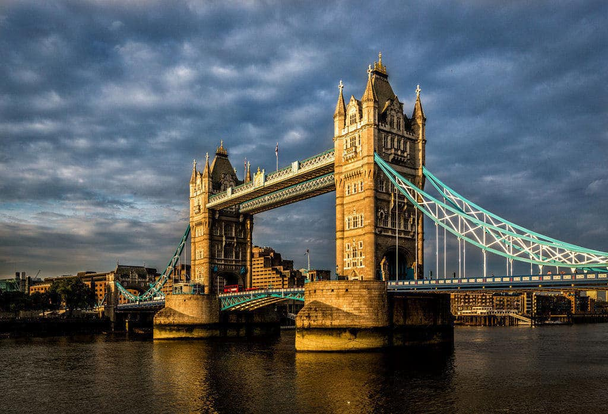
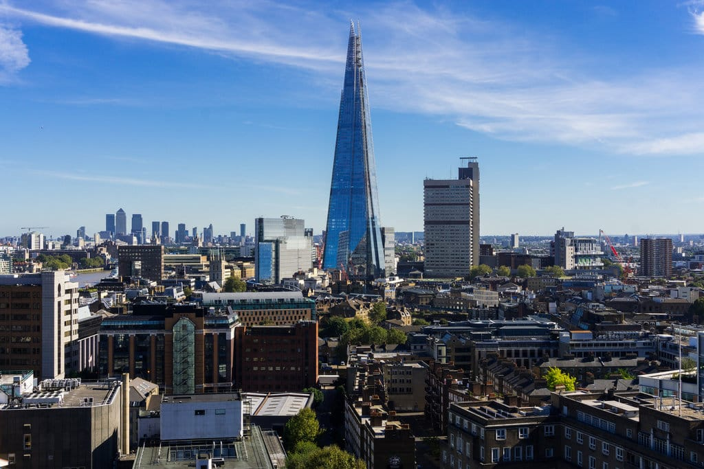
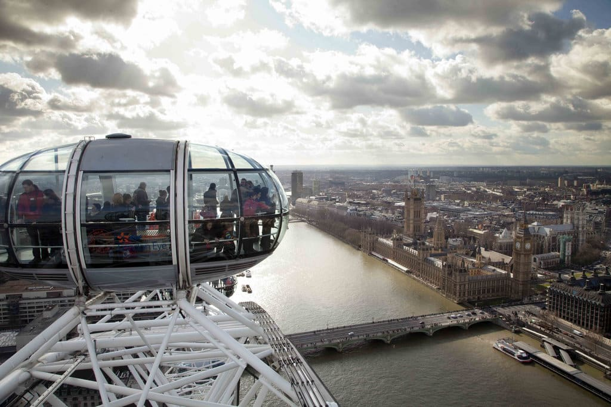
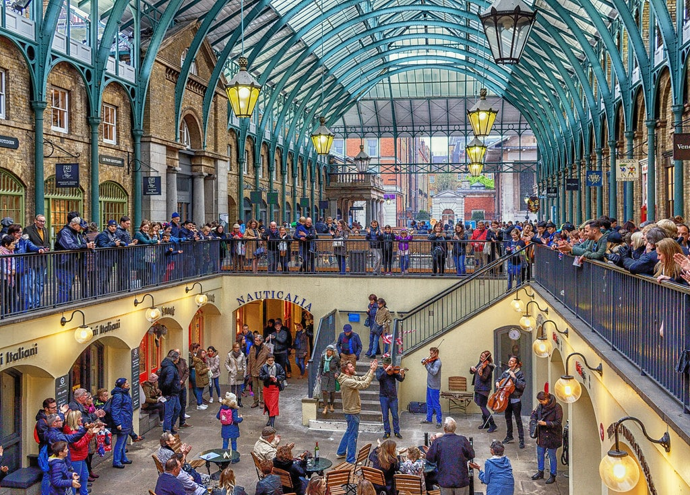

LES LIEUX INCONTOURNABLES POUR VISITER LONDRES
Visiter Londres c’est se plonger dans une véritable ville cosmopolite, qui est la capitale du Royaume-Uni et l’une des plus grandes villes européennes. Bien plus étendue que notre capitale à nous, c’est une ville dynamique, effervescente, vibrante, moderne, et j’en passe ! On l’appelle aussi la « ville-monde ».
Des milliers de boutiques, restos, pubs, des centaines de musées, galeries, des dizaines de marchés, parcs… On n’a jamais fini de l’arpenter, tellement il y a de lieux et d’activités à faire pour visiter Londres !
Mais il faut bien commencer quelque part donc voici les must-seen à ne pas rater pendant ton séjour londonien.
L’Abbaye De Westminster
C’est l’un des édifices religieux les plus célèbres de Londres, classé au patrimoine de l’UNESCO.
De style gothique, c’est le lieu de sépulture de la plupart des rois et des reines d’Angleterre. Mais aussi d’hommes d’Etats, de poètes, de pêcheurs…etc. C’est aussi ici qu’ont lieu les principaux couronnements royaux.L’Abbaye de Westminster est située tout près de Big Ben, l’horloge emblématique de la capitale qui est dans la tour du palais de Westminster, siège du parlement britannique.

Tower Bridge
Le Tower Bridge est le pont le plus célèbre de la capitale britannique.Tu pourras visiter l’ancienne salle des machines et te balader sur le pont, la passerelle du haut est piétonne et te donnera une jolie vue sur Londres et la Tamise.Le clou du spectacle c’est la levée du pont, la passerelle du bas bascule pour laisser passer les grands navires.Pas d’horaire précis donc il faut tomber au bon moment quand tu viens visiter Londres.

View From The Shard
Un autre monument que tu ne pourras pas louper par sa hauteur, c’est The Shard, l’une des plus hautes tours d’Europe, 309,60 mètres de haut ! C’est une tour de verre située dans le quartier de London Bridge conçue par l’architecte Renzo Piano et inaugurée en juillet 2012.
Si tu n’as pas le vertige alors c’est une activité à ne pas louper lors d’une visite à Londres.Une fois monté avec l’un des ascenseurs à grande vitesse, tu auras alors une vue impressionnante et vertigineuse sur Londres.
Si tu cherches une vue encore plus impressionnante il ne restera plus que le tour en hélicoptère.

London Eye
Une alternative à The View from the Shard en terme de vue à couper le souffle sur Londres, c’est la grande roue, The London Eye sponsorisée par Coca-Cola.Tu te trouveras ici à 135 mètres de hauteur au dessus de la Tamise avec une vue à 360°.
C’est tout de même la plus grande roue d’Europe et c’est l’attraction la plus visitée de Londres.Le tour complet dure 30 minutes et tu pourras apprécier les nombreuses perspectives différentes sur la ville. Une chouette activité à faire quand on vient visiter Londres.

Covent Garden
Situé dans le West End, c’est le principal quartier londonien des théâtres et des loisirs. Il est associé à l’ancien marché de fruits et légumes, qui est maintenant un marché artisanal nommé Apple Market.
Tu y trouveras aussi le fameux opéra : le Royal Opera House. Pour la petite anecdote, il est également connu sous le nom de « Covent Garden », le quartier où il est situé.
Près de l’église Saint-Paul, il y a toujours des artistes de rue et des divertissements pour animer les foules qui déambulent dans les différentes ruelles de ce beau quartier.
Tu y trouveras aussi de superbes bâtiments, théâtres et aussi des musées, comme le musée du Transport qui expose des véhicules rétro.

Voici quelques images vous permettant d'avoir un aperçu sur la ville de Londres.